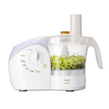
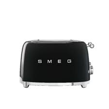
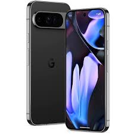
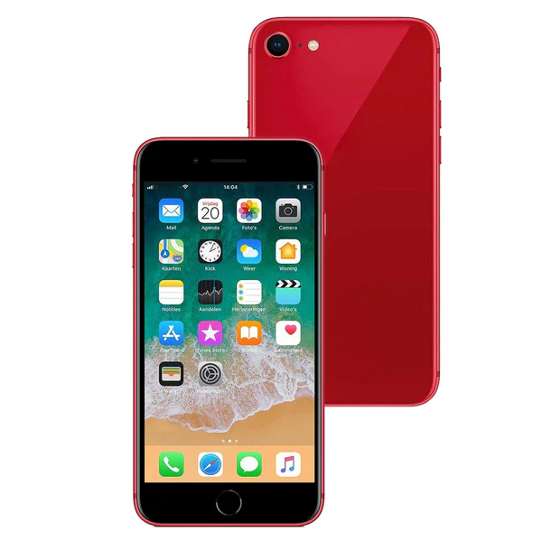
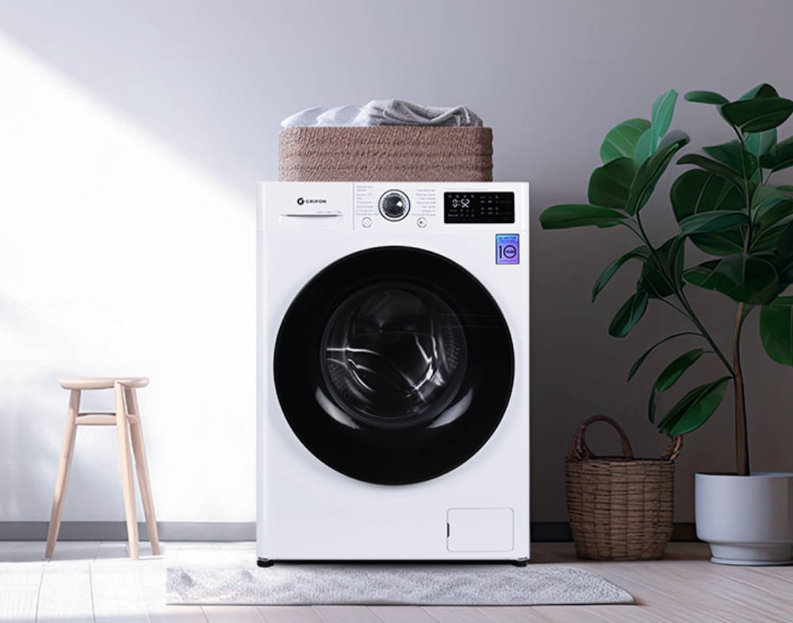
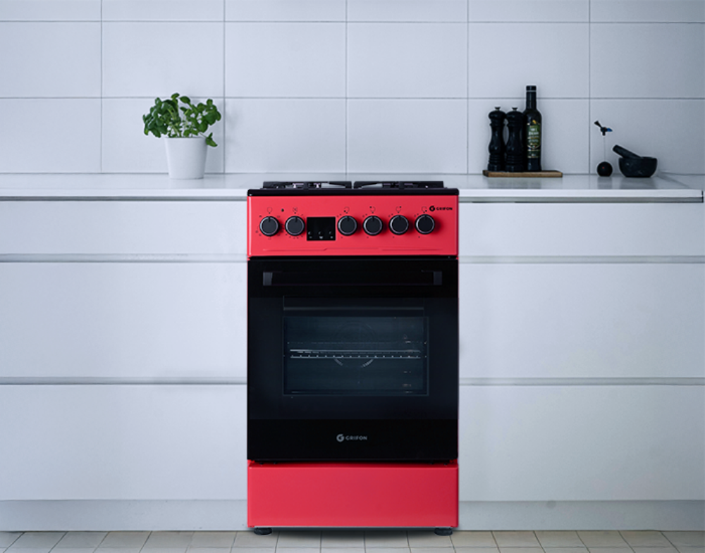

COMFY — безумовний лідер з продажу побутової техніки та електроніки в Україні. Компанія вже понад 10 років
працює в омніканальній бізнес-моделі і є гравцем #2 в українському e-commerce.
Станом на 1 лютого 2025 року мережа COMFY налічує 110 магазинів.


Техніка для кухні
COMFY — соціально відповідальна компанія. На тлі тривалої військової агресії та повномасштабного вторгнення
росії, один із пріоритетних напрямів соціальної відповідальності компанії була та залишається допомога
українському війську та волонтерам.
Загальний обсяг підтримки військових та волонтерів від початку
повномасштабного вторгнення перевищив 165 мільйонів гривень. Також компанія підтримує екологічні ініціативи,
спрямовані на відповідальне споживання природних ресурсів та утилізацію відходів, та впроваджує культуру
DEI.


Мобільні телефони
Важливою складовою стратегії розвитку компанії є прозора та ефективна діяльність. Тому COMFY з 2011 року
проходить аудиторську перевірку у провідних компаній "Великої четвірки", продає виключно офіційну та
сертифіковану техніку від провідних виробників та постачальників,
відповідально ставиться до виконання зобов’язань перед державою та традиційно входить до Топ-100
найбільших платників податків України.


Велика побутова техніка